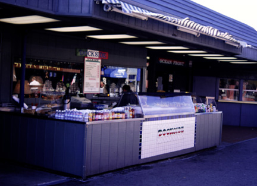

Seafood and Snacks at Dockside's. As you walk along the wharf, not far past the entrance on the right, you'll come across a food stand called Dockside's. There they serve fresh seafood- straight from the Monterey Bay, drinks, and a variety of other snacks. On the ice you will always find some sort of tantalizing kind of seafood just asking to be sampled. The photograph was originally produced with late afternoon sun and a 35 mm camera using Provia slide film, shutter speed 125, F4. Photo copyright Andrea L. Arredondo, May 11, 2000.
Updated by Andrea Arredondo
5/19/00